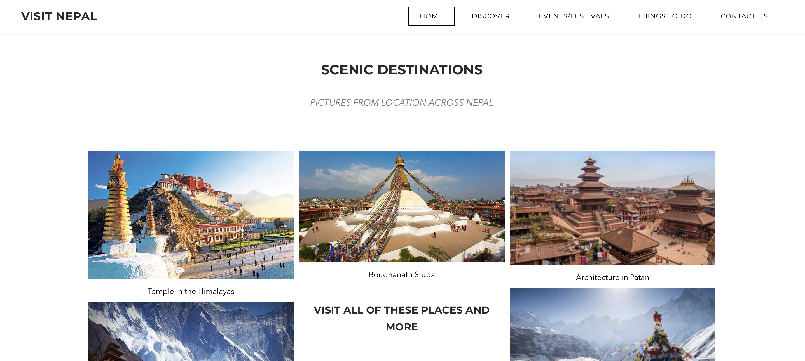

During my elementary school life, I was on the basketball and volleyball team. I was also on the math team and guitar club.
After elementary school I transitioned into high school. I went to Von Steuben, here in Chicago. Here is where I decided to stick with one sport(swimming) and where I began to learn code. I found my web development and web design classes to be the most interesting, hence why I am an ITM/Cybersecurity major now. Through my knowledge of HTML, I began to make websites. It started with a current events webpage and it went as far as creating the class webpage for my teacher.
Below is one of the first websites I ever made:
Other than school, I held a number jobs. Such as working at Kohls and as a life guard. This was a great base for me, as it was my first taste of the real world. I understood what holding a job meant and the responsibility that came with it.
Lastly, travel was a huge part of my life during this time. My family and I would travel at least once a year.
Here is a list of all the places I have visited (airports included).
Now, I am a college student at Illinois Institute of Technology in, Chicago, IL. I am a ITM/Cybersecurity major, in my second year. I have already taken a number of coding and IT management classes.
While college isn't in session, I work as a Tech Specialist at CDW. The Vernon Hills Location. My prior understanding of work and improved soft skills helped me land this summer job. I worked there this past summer, taking apart hardware and installing software. It was a great experience into the IT industry.
If you want to read about my other interests and what I do in my freetime, feel free to check out the Interests + Projects page.